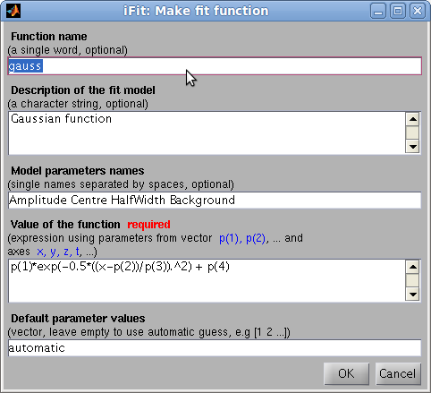

iFit: iFuncs fit models
- How to use models
- List of default fit models
- Model builder: making a model easy
- How to write manually a model function
Commands we use in this page: fits, ifitmakefunc, fits(iData)
How to use models
Models are numerical functions, that take input axes and a parameter set, and return a function evaluation.
Such models are used in iFit when there is a need to e.g. compute and
plot a function evaluation corresponding with the axes of an iData
obect by means of the ieval function. Similarly, this
function evluation can be used iteratively in an optimization process
in order to find a parameter set that matches best the iData object
Signal, using the fits method. All these are explained in the Fit page.
Each function/model can be used in the following ways (for instance model may be 'gauss'):
>> model % display model informations
>> model('identify')
>> model('plot') % plot the model with its default settings
>> model(p, x, y ...) % evaluate the model with parameters p, and axes x,y,...
>> model([], x, y ...) % evaluate the model with axes x,y,... and automatic parameter guess
>> model('guess', x, y ...)
>> ieval(a, @model, p) % evaluate the model onto the iData object axes with parameters p
>> fits(a, @model, p) % fit the model onto the iData object
List of default fit models
Function
|
Description
|
Dimensionality
|
Parameters
|
| gauss |
Gaussian
|
1D |
Amplitude Centre HalfWidth Background
|
lorz
|
Lorentzian
|
1D |
Amplitude Centre HalfWidth Background |
dho
|
Damped harmonic oscillator
|
1D |
Amplitude Centre HalfWidth Background Temperature(in "x" unit)
|
triangl
|
Triangular
|
1D |
Amplitude Centre HalfWidth Background |
voigt
|
Voigt function
|
1D
|
Amplitude Centre Width_Gauss Width_Lorz Background
|
dirac
|
Dirac peak
|
1D
|
Amplitude Centre
|
green
|
Green function
|
1D
|
Amplitude Centre HalfWidth Background |
strline
|
Straight line
|
1D
|
Gradient Background
|
The list of all available fit functions can be obtained from the command:
>> fits(iData)
Model builder: making a model easy
The ifitmakefunc tool enables to define a new fit function/model from a simple dialog, by entering its expression as a function of the parameter vector p and the axes x,y,z,...
>> h=ifitmakefunc;
The only required argument is the expression, but you may as well
enter a function name and description, parameter names and default
values. When started without any parameters, the Gaussian function
settings are used.
The function both creates a function file, and returns its function handle, that may be used with ieval anf fits.
>> [p,criteria,message,output]= fits(a, h);
A quick definition, without using the dialog, can be performed with the syntax:
>> h=ifitmakefunc('p(1)*exp( (x-p(2))/p(3) )');
and, for a more detailed description:
>> h=ifitmakefunc('function_name', 'description', 'Parameter1 Parameter2 ...', ...
'expression', [default parameter values]);
which is equivalent to:
>> fun.function='function_name'; % function name
>> fun.Description='function description'; % function long description
>> fun.Parameters='Paramater1 Parameter2 ...'; % parameter names
>> fun.Guess=[0 1 2 ...] or 'automatic'; % parameter default values, or automatic mode
>> fun.Expression='expression using p and x,y,z,t...'; % value of the model
>> h=ifitmakefunc(fun);
The resulting function has the ability to identify itself (provide
detailed informations), compute automatic starting parameters, display
itself, and evaluate its values of course.The resulting function embeds the automatic guess functionality (iFuncs_private_guess),
and thus can be stored anywehere in the Matlab search path, but should
better be in the iFit/iFuncs directory so that it apperas in the fits(iData) function list.
How to write manually a model function
We suggest that you start from the 'gauss' function in iFit/iFuncs, and
customize at will. Please retain the function core structure to ensure
proper execution. Store the new function in iFit/iFuncs so that it can access the automatic guess functionality (iFuncs_private_guess). A template function also exists in iFit/iFuncs/private/template.txt.
E.
Farhi - iFit/fit models -
$Date: 2011-06-06 10:18:26 $ $Revision: 1.7 $
-
back to
Main
iFit Page 
{kind=link}